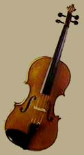

|
The Viola
The viola is the alto of the violin family, and it has the responsibility of playing the tenor part in the string quartet. Larger and heavier than the violin, it is tuned a fifth lower and has a darker, somewhat nasal tone. The strings are tuned a fifth apart at C3(130.8 Hz), G3, D4, A4(440 Hz).
String instruments characteristically produce a fundamental resonance plus all the string harmonics.
|